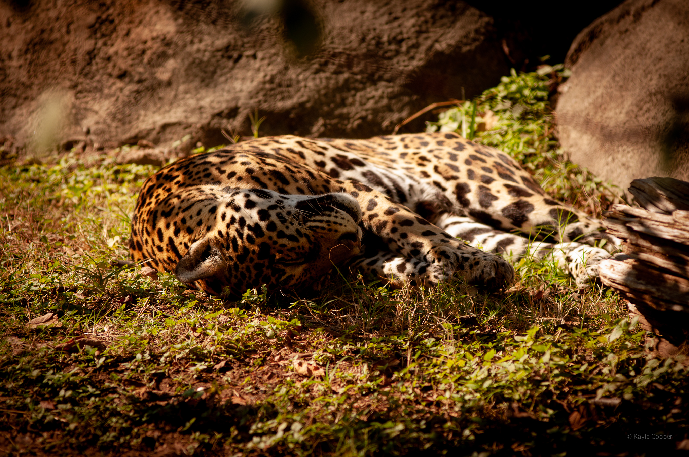
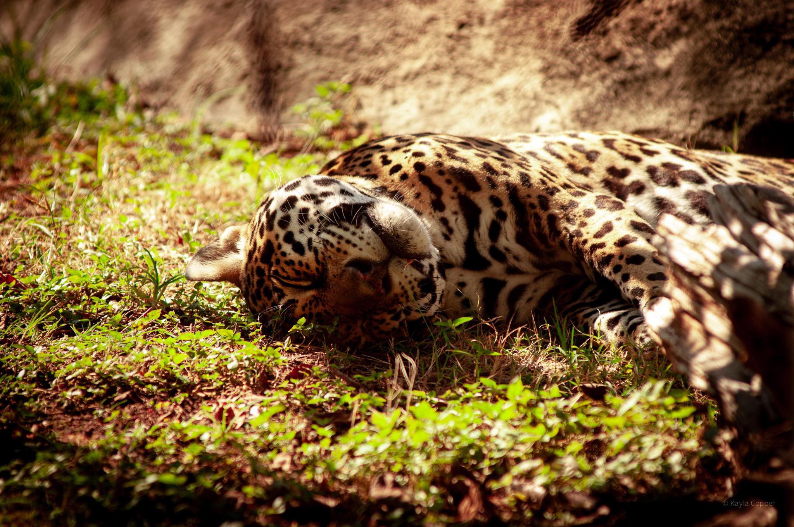
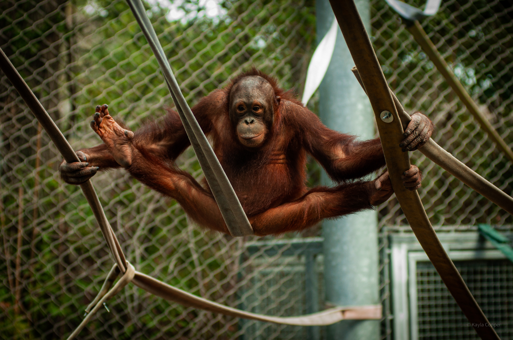

Hi, I'm Kayla Copper, I am currently working at Amazon and taking a course through Correlation One for software development. I've created this site to share my experiences and to have a place to show some projects that I've worked on
When I'm not working or coding I try to spend my time living life. One of the ways I do this is I like to take photos of where I have been. Below are some photos I took at The Cameron Zoo.
If you want to know more about my software development journey you
can connect with me on
LinkedIn .
If you want to check out any of my photography I have an
Instagram .


